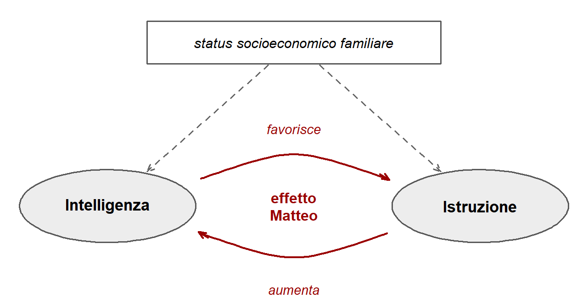

15 Intelligenza, scuola e condizioni sociali
I test di intelligenza sono nati per prevedere. Binet voleva sapere quali bambini avrebbero avuto difficoltà a trarre profitto dalla scuola. I test dell’esercito dovevano indicare chi avrebbe sostenuto ruoli complessi. Wechsler cercava di stimare la capacità di vivere in autonomia. Questa parte del libro verifica quanto quelle previsioni funzionino davvero, partendo dall’ambito per cui i test sono stati inventati: la scuola.
Una premessa vale per i tre capitoli. Le correlazioni fra QI ed esiti rilevanti vanno da circa 0,20 a 0,50, e superano quella soglia solo nella scuola. Per la psicologia sono valori da medi a molto alti, e si indeboliscono man mano che l’esito si allontana dalle aule: forti con i voti, moderate con la prestazione lavorativa, modeste con il reddito. Ma anche una correlazione di 0,50 lascia la maggior parte della varianza non spiegata. Il QI pesa, a volte molto. Non è un destino.
15.1 Una previsione robusta
Il QI prevede il rendimento scolastico in qualsiasi materia. In uno studio su oltre 70.000 studenti inglesi, i punteggi a una batteria cognitiva somministrata a 11 anni sono stati confrontati con i risultati degli esami nazionali sostenuti a 16. Le correlazioni con le singole materie andavano da circa 0,4 nelle discipline artistiche a quasi 0,8 in matematica. Fra il fattore cognitivo generale e un fattore generale di rendimento negli esami la correlazione era circa 0,8 (Deary et al., 2007). Una meta-analisi su studi di tutto il mondo colloca la correlazione fra intelligenza e voti scolastici attorno a 0,54 (Roth et al., 2015).
Perché una relazione così forte? Il QI riflette capacità che la scuola richiede continuamente: memorizzare, astrarre, cogliere regole implicite, adattarsi a situazioni poco chiare, generalizzare ciò che si è imparato. Il QI, inoltre, misura queste capacità in modo più preciso di quanto possano fare osservatori esperti. Il giudizio degli insegnanti sulle abilità cognitive degli studenti correla con i test in misura apprezzabile, ma lontana dalla perfezione (Machts et al., 2016).
15.2 Una correlazione non è un’identità
Data una relazione così stretta, alcuni ricercatori usano direttamente voti, punteggi nelle indagini come PISA o anni di istruzione come indicatori dell’intelligenza. I punteggi PISA, in effetti, riflettono in larga parte un fattore generale (Pokropek et al., 2022). Ma la scorciatoia è pericolosa. Il QI, misurato bene, è una stima del funzionamento cognitivo attuale, non di un potenziale innato: anch’esso risente della scolarizzazione, come mostra il capitolo sul potenziamento. Ma ne risente molto meno del rendimento scolastico, che dipende direttamente dalla qualità delle scuole, dai programmi, dalla motivazione, dalle condizioni familiari, dal modo in cui una prova viene presentata.
Un caso italiano mostra il rischio. Lo psicologo Richard Lynn sostenne che gli italiani del Sud avessero un QI medio di circa dieci punti inferiore a quello degli italiani del Nord, e propose una spiegazione genetica. A sostegno citava correlazioni con reddito, mortalità infantile, statura e livelli di istruzione (Lynn, 2010). Ma i suoi «QI regionali» non erano QI: erano punteggi PISA di quindicenni in lettura, matematica e scienze.
Le repliche hanno messo in luce molti problemi (Cornoldi et al., 2010). Il divario Nord-Sud nei risultati scolastici diventa evidente nella scuola secondaria, dove il sistema educativo del Sud è storicamente più debole; se riflettesse l’intelligenza, dovrebbe essere visibile già alla primaria. Gli studenti del Sud ottengono buoni risultati nelle prove somministrate individualmente e peggiori in quelle collettive, segno di un diverso coinvolgimento nel compito. Fra un’edizione e l’altra di PISA i punteggi del Sud cambiavano in modo troppo rapido per riflettere differenze stabili di capacità. E i dati non coincidevano con quelli delle prove nazionali INVALSI. La lezione è generale: si può inferire l’intelligenza dagli apprendimenti solo dove le condizioni di apprendimento sono uniformi. Fra regioni con sistemi scolastici e contesti diversi non lo sono.
15.3 Intelligenza e istruzione: chi causa chi?
Il QI misurato nell’infanzia e il livello di istruzione raggiunto da adulti sono fortemente correlati, con valori oltre 0,50 (Strenze, 2007). Le spiegazioni possibili sono le solite tre.
L’intelligenza favorisce l’istruzione. Chi apprende più facilmente riceve più rinforzi positivi, sviluppa più fiducia nelle proprie capacità, sperimenta meno fallimenti, viene incoraggiato a proseguire. Nelle coorti britanniche nate nel Novecento, un QI di una deviazione standard più alto a 10–11 anni si associava a una probabilità circa tre volte maggiore di ottenere una laurea («Childhood cognitive ability and adult academic attainment», 2010). È un esempio di effetto Matteo, dal versetto evangelico secondo cui a chi ha sarà dato ancora: piccoli vantaggi iniziali si accumulano e si amplificano (Stanovich, 1986).
L’istruzione aumenta l’intelligenza. Come si è visto nel capitolo sul potenziamento, la scuola produce stimoli cognitivi, abitua all’astrazione, fornisce conoscenze e familiarità con le situazioni di valutazione. Le stime causali vanno da uno a cinque punti di QI per anno di istruzione (Ritchie & Tucker-Drob, 2018).
Cause comuni. Lo status socioeconomico della famiglia influenza sia lo sviluppo cognitivo sia le opportunità di studio. È certamente un fattore confondente. Nei paesi occidentali con istruzione, sanità e opportunità relativamente universali, tenerne conto riduce le stime, ma non le stravolge.
Le tre spiegazioni non si escludono. Le evidenze indicano che sono tutte e tre all’opera, e che si rinforzano a vicenda nel tempo.
15.5 In cima alla distribuzione
Finora si è parlato della media e della parte bassa della distribuzione. Ma la stessa correlazione vale anche in alto, e qui circola un mito tenace: oltre una certa soglia, diciamo un QI di 120, l’intelligenza non farebbe più differenza, e conterebbero solo impegno, creatività e carattere.
I dati più convincenti sul punto vengono dallo Study of Mathematically Precocious Youth, che dagli anni Settanta segue negli Stati Uniti migliaia di ragazzi selezionati a 13 anni perché si trovavano nell’1% più alto in prove di ragionamento. Anche dentro quell’1%, chi stava nel quarto superiore aveva da adulto probabilità sensibilmente maggiori di ottenere un dottorato, pubblicare in ambito scientifico o registrare un brevetto rispetto a chi stava nel quarto inferiore (Lubinski & Benbow, 2006). Fra i ragazzi identificati nell’uno su diecimila più alto, molti sono arrivati a posizioni di grande rilievo nelle università, nelle aziende e nelle professioni (Kell et al., 2013). La soglia oltre la quale «non conta più» non si trova. Si trova, semmai, una differenza di probabilità che continua ad agire anche fra persone già eccezionali.
Questo non trasforma la plusdotazione in una diagnosi. Non esiste un confine naturale fra alto potenziale e normalità, così come non esiste fra disabilità intellettiva e funzionamento limite; le soglie usate, spesso un QI di 130, sono convenzioni di rarità. E dire che «ogni bambino è dotato a modo suo», per quanto gentile, svuota la parola del suo significato: se tutti sono rari, nessuno lo è (Warne, 2020).
La domanda pratica è che cosa farne a scuola. Un secolo di ricerca indica che l’accelerazione, cioè anticipare l’ingresso a scuola o saltare un anno o una materia, e alcune forme di raggruppamento per livello hanno effetti positivi sul rendimento degli studenti più dotati (Steenbergen-Hu et al., 2016). Non sono privilegi. Sono il riconoscimento che un programma tarato sulla media è troppo lento per chi sta molto sopra, esattamente come è troppo veloce per chi sta molto sotto. Resta infine il caso dei bambini con un’abilità generale alta e un disturbo dell’apprendimento: due rarità che si mascherano a vicenda, e che il capitolo sulla valutazione nel neurosviluppo aiuta a riconoscere.
15.6 Che cosa significa, e che cosa no
L’intelligenza è il miglior singolo predittore del rendimento scolastico che si conosca, e attraverso l’istruzione contribuisce alla posizione sociale. Questo non significa che la scuola sia una formalità o che i risultati siano già scritti. Significa, piuttosto, che le differenze cognitive si traducono in differenze sociali attraverso istituzioni concrete: classi, programmi, selezioni, titoli. Istituzioni diverse possono amplificare o attenuare quella traduzione. E chi usa i risultati scolastici come se fossero un test di intelligenza dimentica proprio queste istituzioni.